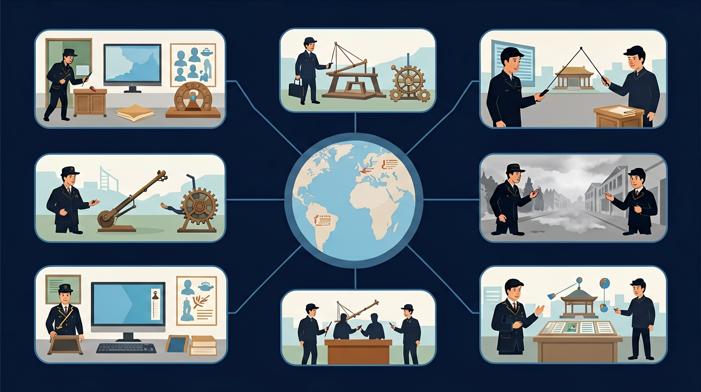

世界近代史内容要求：了解资本主义发展、社会主义运动和民族解放运动。

🎯 能说出工业革命的3项关键技术发明
🎯 能判断英国率先工业革命的2个地理条件
🎯 能分析工厂制度对生产效率的提升作用
❓ 为什么蒸汽机比以前的机器厉害那么多？
❓ 工厂和以前的手工作坊到底有啥不一样？
❓ 工业革命让普通工人的生活变好了还是变差了？
学完这一课，这些问题你都能自信地回答。
工业革命最早开始于哪个国家？
下列哪项不是第一次工业革命的特征？
选择或输入后，这节课会围绕你的问题展开。
学习「工业革命与近代化」时，第一步最应该做什么？
先选一个，错了正好暴露你的前概念，我们一起纠正。
工业革命与近代化是初中历史的重要内容。世界近代史内容要求：了解资本主义发展、社会主义运动和民族解放运动。
课程内容结构示意图：世界近代史对应“资本主义发展、社会主义运动和民族解放运动”。
学习路径：明确概念→掌握方法→情境练习→反思纠错。
历史课程内容按照历史时序展示中外历史发展基本过程，把握不同历史时期的时代特征。
点击时代按钮切换世界格局；结合本课主题观察空间分布。
把卡片拖到核心概念 / 方法技能 / 应用情境 / 常见误区。
拖完 4 项后自动判分。
近代化包含经济工业化、政治民主化、思想科学化等。工业革命是经济近代化的核心动力，并推动教育、城市化与全球联系。中国洋务运动等也是对近代化的早期回应。
答题不要把近代化等同于“西化”一词，而要分经济、政治、思想等层面举例。
常见误区：常见误区是认为近代化只有政治制度一条路，忽视经济与科技。
下列最能体现经济近代化的是？
1. 现代物流系统的原型：亚马逊仓库的智能分拣系统直接承袭自19世纪中叶英国工厂的流水线设计。2022年杭州无人仓采用AGV小车搬运，其路径规划算法与1830年利物浦码头轨道调度逻辑高度相似，只是将蒸汽机车替换为二维码导航。这种生产组织模式变革，正是工业革命留给数字时代的重要遗产。
2. 碳排放核算的历史参照：国际能源署(IEA)评估各国减排责任时，需追溯工业化起点。英国1850年人均CO₂排放量2.5吨的数据，成为当今"共同但有区别责任"原则的计算基准。2023年全球气候谈判中，发展中国家仍援引1870年各国煤炭消费占比（英国42% vs 印度0.7%）来主张发展权。
3. 职业教育体系的雏形：德国双元制教育直接源于19世纪后期克虏伯钢铁厂的学徒车间。当时培养一名合格机械师需7年，现代西门子技术学院仍保留这种"车间+理论"模式。2021年柏林工业大学机械系课程中，仍有15%课时在复原19世纪机床操作规范。
1. 问题：为什么美国工业革命初期（1790-1820）大量复制英国技术，却直到1850年后才实现反超？分析线索：比较两国资源禀赋差异（英国煤炭储量vs美国木材丰度），注意关键转折点——1846年英国废除《谷物法》对全球贸易的影响，再思考1869年横贯铁路通车后美国市场规模扩张的乘数效应。
2. 问题：工业革命如何重塑家庭结构？从1801年英国人口普查数据可见，纺织区15岁以下儿童就业率达23%，但1841年降至11%。这背后既有工厂法限制，也有家庭收入结构变化。进一步思考：当1850年曼彻斯特工人周薪达到15先令（较1780年增长3倍）时，家庭消费模式发生了哪些质变？这些变化又如何反馈到生产领域？
先要理解工业革命为何发端于18世纪晚期的英国——这绝非偶然。农业革命带来的粮食盈余（1700-1800年英国小麦亩产增长47%）释放了劳动力，殖民贸易积累的资本（1760年利物浦奴隶贸易占GDP的5.2%）提供了投资，而专利制度（1624年《垄断法》）保护了技术创新。接着看技术串联如何发生：1733年飞梭使织布提速后，1764年珍妮纺纱机弥补了纱线短缺，但这种棉纺织业突破必须等到1784年科特炼钢法提供可靠金属部件，最终由瓦特蒸汽机（1800年全英已有500台）提供稳定动力。
随着1830年利物浦-曼彻斯特铁路开通，工业化进入新阶段。铁路建设消耗了英国1847年57%的生铁产量，反过来刺激了炼钢技术（1856年贝塞麦转炉使钢价下降80%）。这种自我强化的循环，使得1851年世博会水晶宫能展示2.8万件工业品。最后要看到，工业化不仅是技术史，更是社会重组过程。1842年《矿工报告》揭露的童工问题，催生了1847年《十小时工作制法案》，而1860年英国城市人口首次超过农村，彻底改变了人类聚居形态。这种从技术革新到制度调适的连锁反应，正是"近代化"的核心特征。
1. 错误认为工业革命仅发生在英国：许多学生看到"第一次工业革命"便默认是英国专属。这种误解源于教材常以英国为典型案例（如1765年哈格里夫斯发明珍妮纺纱机）。实际上，1815年后法国、德国鲁尔区相继出现机械化纺织厂，1830年美国洛厄尔工厂已实现水力织布机规模化生产。正确理解应是：英国是发源地，但工业革命具有跨国扩散性，各国工业化进程存在10-20年时差。
2. 混淆"工厂制"与"手工工场"本质区别：学生常将两者都归为"集中生产"，忽略制度变革。典型错误表现为将18世纪曼彻斯特棉纺厂与16世纪佛罗伦萨羊毛工场混为一谈。认知根源在于未抓住蒸汽动力（1781年瓦特改良蒸汽机热效率达3%）带来的生产组织革命——工厂制要求严格工时（如1844年英国工厂法规定童工每日不超过6.5小时）、标准化流程（如博尔顿-瓦特工厂的零件公差控制）。
3. 高估铁路的初始作用：受教科书插图影响，学生常将1825年斯托克顿-达灵顿铁路视为工业革命早期标志。实际上直到1850年，英国货运量仍以运河为主（占比65%），铁路真正爆发是在1870年后钢轨普及期。这种时空错位源于将技术发明与应用高峰混同，需结合具体数据纠正。
复制提示词到 AI 学伴，生成「工业革命与近代化」的时间轴或事件提纲；也可以上传你手绘的示意图，请 AI 学伴点评。
复制后可粘贴到 AI 学伴继续对话。
下列哪项最能说明工业革命的本质？
探究工业革命对生产效率和工人生活的影响
关于工业革命与近代化的学习，哪种做法最科学？
选一个并查看反馈。
先独立作答，再点选项查看对错与错因。
下列哪项最能体现工业革命对生产方式的影响？
工业革命时期，工厂主引入蒸汽机的主要目的是什么？
工业革命对英国社会结构的影响主要体现在？
工业革命时期，____的发明和应用标志着生产方式的重大变革。
答案：蒸汽机
蒸汽机的发明和应用是工业革命的重要标志
工业革命不仅提高了生产效率，还导致了____的加速。
答案：城市化
工业革命加速了城市化进程
✅ 瓦特改良纽可门蒸汽机
💡 混淆发明与改良概念
✅ 明确第一次工业革命以蒸汽动力为标志
💡 历史分期概念模糊
口诀：蒸汽一响黄金万两，铁路贯通财富流动
类比：像手机取代座机，蒸汽机淘汰了传统作坊
（中考真题）英国曼彻斯特在18世纪后期人口激增，主要因为：
若用工业革命原理分析外卖行业，最类似蒸汽机作用的是：
下列现象最能体现工业革命社会影响的是：
点击节点跳转到对应章节；可切换布局。